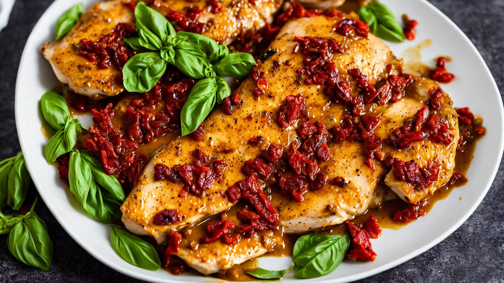
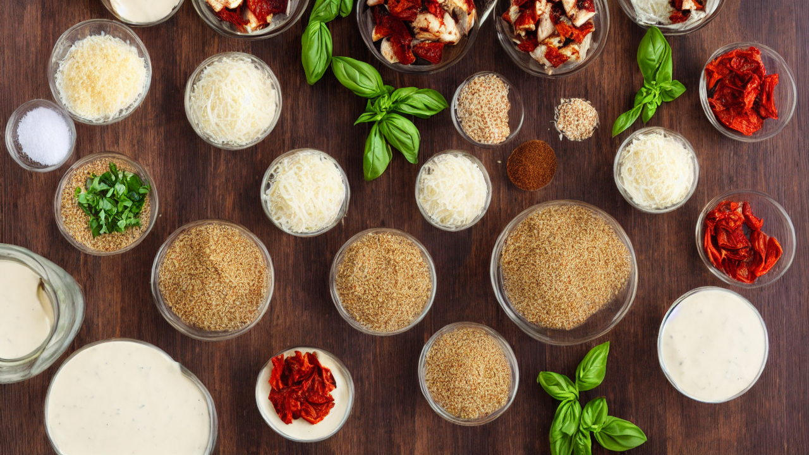
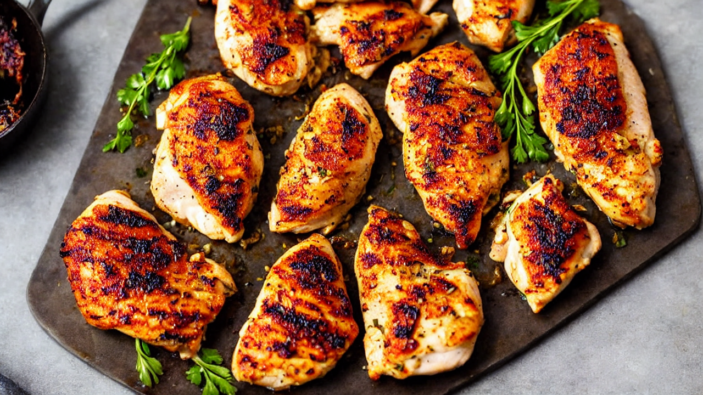

Marry Me Chicken | The Creamy Dish That Gets You Proposed To
This Marry Me Chicken is so unbelievably good that it earned its name for a reason. Juicy pan-seared chicken smothered in a creamy sun-dried tomato and Parmesan sauce with fresh basil. One bite and they'll be down on one knee. Ready in 30 minutes! #MarryMeChicken
Ingredients
- your ingredients: 4 boneless skinless chicken breasts
- salt
- pepper
- Italian seasoning
- garlic powder
- olive oil
- 3 cloves garlic
- 1 cup chicken broth
- three-quarter cup heavy cream
- half a cup sun-dried tomatoes
- half a cup grated Parmesan
- fresh basil
Instructions

This Marry Me Chicken is the dish that made someone propose on the spot. Creamy, cheesy, and impossibly flavorful. Let's make the most romantic dinner ever in 30 minutes!

Gather your ingredients: 4 boneless skinless chicken breasts, salt, pepper, Italian seasoning, garlic powder, olive oil, 3 cloves garlic, 1 cup chicken broth, three-quarter cup heavy cream, half a cup sun-dried tomatoes, half a cup grated Parmesan, and fresh basil.

Pound the chicken breasts to an even half-inch thickness so they cook evenly. Season both sides generously with salt, pepper, Italian seasoning, and garlic powder.
Heat olive oil in a large skillet over medium-high heat. Sear the chicken for 5 to 6 minutes per side until golden brown with a beautiful crust. Don't move them while they cook! Remove and set aside.
In the same skillet, saute the minced garlic for 30 seconds until fragrant. Add the chicken broth and scrape up all those delicious brown bits from the bottom of the pan. That's pure flavor!
Stir in the heavy cream, chopped sun-dried tomatoes, and grated Parmesan. Whisk until the cheese melts into a silky, golden sauce. Let it simmer for 3 minutes until it thickens slightly.
Nestle the seared chicken back into the sauce. Spoon the sauce over the top and let it simmer for 5 to 8 minutes until the chicken reaches 165 degrees Fahrenheit internally.
Finish with a handful of fresh basil leaves and an extra sprinkle of Parmesan. Serve over pasta, rice, or crusty bread to soak up every drop of that incredible sauce.
One bite of this and they'll never want to eat anywhere else again. Subscribe for more recipes that will change your dinner game forever!